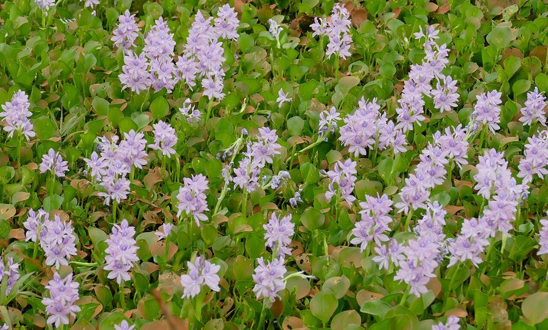

जलकुंभीWater Hyacinth
Eichhornia crassipes · Pontederiaceae · FLR-0013

- Scientific name
- Eichhornia crassipes (Mart.) Solms
- Family
- Pontederiaceae
- Hindi
- जलकुंभी / कुंभी
- Status here
- invasive
- IUCN
- not evaluated
When to look कब देखें
Present all year.
जलकुंभी / Water Hyacinth
Eichhornia crassipes (Mart.) Solms — Pontederiaceae
जलकुंभी — पूर्वी उत्तर प्रदेश के तालाबों और जलाशयों की सबसे हानिकारक आक्रामक प्रजाति है। दक्षिण अमेरिका से आई, 19वीं सदी में। फूल सुंदर लगते हैं — लेकिन यह धीरे-धीरे हर उस तालाब को नष्ट कर रही है जहाँ कभी कमल था।
हिंदी परिचय Hindi Overview
जलकुंभी (Eichhornia crassipes) दक्षिण अमेरिका की मूल निवासी है — ब्राज़ील के अमेज़न बेसिन से। 19वीं सदी में इसे सुंदर फूलों के लिए एशिया लाया गया। अब यह IUCN की "विश्व की 100 सबसे हानिकारक आक्रामक प्रजातियों" में शामिल है।
पूर्वी यूपी के हर तालाब में जलकुंभी दिखती है। मानसून में यह इतनी तेज़ी से बढ़ती है कि कुछ ही हफ्तों में पूरा तालाब ढक जाता है। इसके नीचे पानी में ऑक्सीजन खत्म हो जाती है — मछलियाँ मरती हैं, कमल और शैवाल नष्ट होते हैं, मेंढक और जलपक्षी का निवास बर्बाद होता है।
फिर भी — जलकुंभी की पूरी तरह बुरी नहीं है। यह थोड़ी मात्रा में भारी धातु और प्रदूषण सोखती है। इसकी खाद बनती है। और यह पूछना ज़रूरी है: क्या यह तालाब पहले ही प्रदूषित था जो जलकुंभी ने उसे घेर लिया? जलकुंभी अक्सर प्रदूषित, यूट्रोफिक (पोषक-तत्व अधिक) पानी में ही पनपती है।
Quick Identification शीघ्र पहचान
| Feature | Description |
|---|---|
| Form | Free-floating perennial aquatic herb forming dense interlocking mats |
| Petioles | Swollen, bulbous, spongy, and air-filled; 5–12 cm long; provide buoyancy |
| Leaves | Rosettes of 5–8 leaves; blades rounded, waxy, glossy bright green, 5–12 cm wide |
| Flowers | Pale violet-blue/mauve, 6-lobed, upper petal with a yellow spot surrounded by blue; in spikes |
| Roots | Dense, feathery, dark purple-black, hanging suspended in water; 30–100 cm long |
| Stolons | Horizontal runners producing clone daughter plants, enabling rapid vegetative spread |
Field tip: Look for floating green mats with bulbous, spongy leaf stalks (petioles) that feel like foam when squeezed. The showy purple-blue flowers with a yellow guide-spot on the upper petal are unmistakable. Water Lettuce (Pistia stratiotes) also floats but has velvety pale-green leaves without swollen stalks and lacks showy flowers.
Morphology आकृति विज्ञान
| Feature | Measurement |
|---|---|
| Plant height | 30–100 cm |
| Leaf length | 5–12 cm |
| Leaf width | 5–12 cm |
| Flower diameter | 4–6 cm |
| Fruit / seed dimensions | 1.5 mm (seed length) |
Habit: Perennial free-floating aquatic herb. Plants form rosettes of 5–8 leaves. Stolons (runners) extend horizontally, forming daughter plants and creating mats.
Petioles: The most distinctive feature — swollen into ovoid aerenchymatous (air-filled tissue) floats, 5–12 cm long, 3–7 cm wide, spongy, pale greyish-green. The air chambers provide buoyancy.
Leaves: Emergent above water, rounded to broadly ovate, 5–12 cm, glossy and waxy. Petiole sometimes reverts to non-inflated in deep water or dense mats — adaptive response to crowding.
Flowers: Showy, in terminal spikes. Perianth funnel-shaped, 6-lobed, pale mauve-blue; one upper petal with a bright yellow spot (guides pollinators). Ephemeral — each flower lasts 1–2 days. Flowering August–October in eastern UP.
Roots: Dense, fibrous, adventitious, dark purple-black; extremely long (30–100 cm) in open water. Absorb nutrients directly from water.
Reproduction: Primarily vegetative — stolon production so rapid that a single plant can double every 12–14 days under optimal conditions. A 1-hectare mat can produce 3,000+ tonnes of fresh biomass per year. Also reproduces by seed (less common).
हिंदी: एक पौधा हर 12–14 दिन में दोगुना हो सकता है।
1 हेक्टेयर में सालभर में 3,000 टन से अधिक कच्चा सामग्री।
यही है इसके खतरे की वजह।
Ecological Impact पारिस्थितिक प्रभाव
The damage cascade:
- Light blockage: Dense mats (100% cover) block all light from reaching submerged plants. Submerged aquatic vegetation dies — this includes food plants for ducks, geese, and fish.
- Oxygen depletion: Dying biomass decomposes below the mat, consuming dissolved oxygen. Fish kills — including rohu, catla, and catfish — follow in heavily infested ponds.
- Lotus displacement: Water hyacinth and Indian Lotus (Nelumbo nucifera) cannot coexist at high densities. Lotus retreats to the edges or disappears entirely. With lotus go the lotus beetles, the lotus-feeding insects, and the frogs that breed in lotus root tangles.
- Waterbird habitat loss: Open-water species — Sarus Crane, painted storks, ducks — lose foraging and wading habitat. Mats are too dense to wade through and too thin to walk on.
- Mosquito breeding: The shaded, still, oxygen-poor water under mats is ideal for certain mosquito larvae (Culex sp.), increasing malaria and dengue risk.
What it does not destroy: The dense underwater root mass does provide some habitat for small fish fry (hiding from predators), aquatic invertebrates, and some wading birds that can pick arthropods off the root mat. Kingfishers and pond herons sometimes hunt at mat edges.
The eutrophication link: Water hyacinth thrives in nutrient-rich, polluted water. A clean pond with low nitrogen and phosphorus does not support explosive hyacinth growth. When village ponds receive agricultural runoff, washing detergent, and sewage — hyacinth explodes. The hyacinth is a symptom; the nutrient pollution is the disease.
हिंदी: जलकुंभी प्रकाश रोकती है → जलीय पौधे मरते हैं → ऑक्सीजन खत्म होती है → मछलियाँ मरती हैं।
कमल और जलकुंभी एक साथ नहीं रह सकते।
लेकिन: जलकुंभी का विस्फोट प्रदूषित पानी में ही होता है।
तालाब में जलकुंभी दिखे तो समझें — पानी में कुछ गड़बड़ है।
Life Cycle / Phenology जीवन चक्र
- Year-round: Present throughout the year in eastern UP; growth slows in cold (December–January) but does not die
- Peak growth: July–September (monsoon) — temperature and nutrient flush from agricultural fields drive explosive expansion
- Flowering: August–October; short-lived flowers close within 24 hours
- Seed: Produced but less important than vegetative spread; seeds can remain viable in mud for years
- Winter: Plants may become partially prostrate; some die in severe cold; seeds and stolons survive
हिंदी: मानसून में विस्फोट — जुलाई–सितम्बर।
फूल अगस्त–अक्टूबर।
सर्दी में धीमी होती है लेकिन मरती नहीं।
Agricultural / Human Relevance कृषि और मानव संबंध
Problems:
- Clogs irrigation channels — reduced water flow affects paddy irrigation
- Reduces fish yield from ponds — major loss for small-scale fishers in Basti district
- Obstructs boat and net movement in larger water bodies
- Consumes dissolved oxygen needed for fish cultivation
Potential uses (limited):
- Compost: Water hyacinth biomass can be composted and used as fertilizer (high potassium). Practiced in some UP districts; labor-intensive.
- Biogas: Biomass can be used for biogas generation; pilot projects in UP; not widely adopted.
- Phytoremediation: Absorbs heavy metals (lead, cadmium) and excess phosphorus from polluted water. Useful in controlled wastewater treatment — cannot clean an entire pond unmanaged.
- Craft: Dried stems used for basket weaving in some regions of India (not common in UP).
Control methods:
- Manual removal: most common in UP villages; labor-intensive; must be repeated frequently
- Biological control: the weevil Neochetina eichhorniae (introduced from South America) selectively damages hyacinth; available through biocontrol programs; slow but sustainable
- Chemical control: herbicides (glyphosate, 2,4-D); effective but risks non-target effects; not recommended in village drinking ponds
हिंदी: सिंचाई नहर रोकती है, मछली उत्पादन घटाती है।
खाद बन सकती है, लेकिन मेहनत बहुत।
विशेष घुन (Neochetina) से जैविक नियंत्रण संभव।
सबसे असरदार उपाय: पोषण प्रदूषण रोकना।
Expected Locally स्थानीय रूप से अपेक्षित
Not a field record. Written from published accounts for eastern Uttar Pradesh. No confirmed local sighting yet — if you have seen it, that is what the atlas needs.
अभी तक स्थानीय पुष्टि नहीं। यह विवरण प्रकाशित स्रोतों से है, किसी अवलोकन से नहीं।
| Date | Location | Notes |
|---|---|---|
Distribution वितरण
Global range: Native to the Amazon Basin in South America (Brazil); introduced globally and highly invasive in tropical and subtropical regions of Asia, Africa, North America, and Australia.
In India: Widespread across all states and union territories, invading wetlands, lakes, reservoirs, canals, and river systems up to low-elevation hill streams.
In Uttar Pradesh: Extremely common and widespread across the state, dominating eutrophic ponds, irrigation canals, and slow-flowing channels of major rivers.
In Basti district / eastern UP: Abundant in village ponds (talaabs), drainage ditches, wetlands (jhils), and lowlands; exhibits explosive growth during the monsoon season.
Range notes: No significant range changes documented, but seasonal coverage expands rapidly with monsoon runoff.
Research Questions शोध प्रश्न
Anyone can investigate these | कोई भी इन प्रश्नों की जाँच कर सकता है
- What percentage of your village pond is covered by water hyacinth? / आपके तालाब का कितने प्रतिशत हिस्सा जलकुंभी से ढका है? — Estimate visually (25%, 50%, 75%, 100%). Repeat monthly. Track seasonal changes.
- Is there any lotus left in the same pond? / क्या उसी तालाब में कमल बचा है? — Document the boundary between lotus and hyacinth; which is expanding?
- Are there any fish in heavily infested ponds? / जलकुंभी से भरे तालाब में मछलियाँ हैं? — Check by asking fishers or watching herons and kingfishers (if they're fishing, there are fish).
- When does hyacinth start growing fastest in your area? / आपके क्षेत्र में जलकुंभी कब सबसे तेज़ बढ़ती है? — Mark the date of first visible expansion each monsoon. Correlates with temperature and first rains.
- Is water hyacinth compost being used by any farmer in your area? / क्या कोई किसान जलकुंभी की खाद बना रहा है? — If yes, document the method. A viable livelihood link that is underused.
Similar Species मिलती-जुलती प्रजातियाँ
| Species | How to tell apart | हिंदी |
|---|---|---|
| Water Lettuce (Pistia stratiotes) | Soft, velvety, pale green rosette; no inflated petiole; no flowers visible | जल पालक / जल गोभी |
| Duckweed (Lemna sp.) | Tiny (2–5 mm), flat green discs; no leaves or petioles | बत्तख घास |
| Indian Lotus (Nelumbo nucifera) | Emergent circular leaves held above water on central petiole; flowers very large, pink | कमल — जड़ मिट्टी में |
Field rule: Floating mat + round shiny leaves + swollen spongy petioles + feathery purple-black roots = water hyacinth. The inflated petiole is unmistakable once seen.
Taxonomy & Classification वर्गीकरण
Original description. Eichhornia crassipes was described by Carl Friedrich Philipp von Martius as Pontederia crassipes in 1823 in Nova Genera et Species Plantarum 1: 9, t. 4. It was transferred to the genus Eichhornia by Hermann zu Solms-Laubach in 1883 in de Candolle's Monographiae Phanerogamarum 4: 527. Type locality: Brazil. The genus name Eichhornia honors the Prussian minister Johann Albrecht Friedrich Eichhorn.
Subspecies. Monotypic — no subspecies are currently recognised.
Family and order placement. Belongs to the order Commelinales, family Pontederiaceae. The Pontederiaceae is a small monocot family of aquatic herbs containing about 6 genera and 30 species. Under the APG IV classification system, its position within Commelinales is well-supported by both morphological and molecular data.
Phylogenetic notes. Recent molecular phylogenetic analyses (Pellegrini et al., 2018) nested the genus Eichhornia within a broader circumscription of Pontederia. Some taxonomists now treat this species as Pontederia crassipes Mart., though Eichhornia crassipes remains widely used in ecological and weed-management literature.
IUCN status rationale. This species has not been formally assessed by the IUCN Red List. As a highly invasive species, the population is expanding globally and across the Gangetic plain, where it poses a severe threat to aquatic biodiversity.
Photo Gallery फोटो गैलरी
Note: Add field photos tomedia/species/water_hyacinth/
फोटो निर्देश: पूरे तालाब का ऊपर से दृश्य (mat दिखाते हुए), सूजे हुए डंठल (close-up), फूल (नीले-बैंगनी), और कमल के साथ जलकुंभी की सीमा।
Photos needed आवश्यक फोटो
- [ ] Wide shot of pond covered by mat (तालाब ढका हुआ)
- [ ] Inflated petiole close-up (सूजा हुआ डंठल)
- [ ] Flower — pale violet with yellow spot (बैंगनी-नीला फूल)
- [ ] Purple-black roots (बैंगनी-काली जड़ें)
- [ ] Boundary with lotus or open water (कमल के साथ सीमा)
Atlas Connections संबंधित प्रजातियाँ
- Indian Lotus — displaced by water hyacinth; the contrast between these two aquatic species tells the story of pond health in eastern UP (FLR-0005)
- Rohu — fish that suffers most from hyacinth oxygen depletion in cultivated ponds (FSH-0001)
- Asian Common Toad — breeding habitat disrupted by hyacinth mats; lotus ponds preferred (AMP-0001)
- Indian Pond Heron — hunts at hyacinth mat edges; less productive than open water (BRD-0004)
- Mound-building Termite — not directly related, but both are indicator species: termite mounds indicate healthy dry land; hyacinth indicates unhealthy water (SFL-0001)
References संदर्भ
- Martius, C.F.P. von (1823). Nova Genera et Species Plantarum, 1: 9, t. 4. Lindauer, München.
- Solms-Laubach, H. (1883). Pontederiaceae. In: Candolle, A. de & Candolle, C. de (eds.) Monographiae Phanerogamarum, 4: 527. Masson, Paris.
- Pellegrini, M.O.O., Horn, C.N. & Almeida, R.F. (2018). Total evidence phylogeny of Pontederiaceae (Commelinales) sheds light on the systematic position of Eurystemon and diversity of Pontederia L. PhytoKeys, 108: 25–83.
- Penfound, W.T. & Earle, T.T. (1948). The biology of the water hyacinth. Ecological Monographs, 18(4): 447–472.
- Malik, A. (2007). Environmental challenge vis-à-vis opportunity: The case of water hyacinth. Environment International, 33(1): 122–138.
- Coetzee, J.A. et al. (2009). Biological control of water hyacinth — the way forward. Crop Protection, 28(5): 413–419.
- IUCN Invasive Species Specialist Group — Eichhornia crassipes profile.
- Botanical Survey of India — Aquatic Weeds of India.
- GBIF Occurrence Data — Eichhornia crassipes, India (2026).
Source file: species/flora/aquatic/water_hyacinth.md